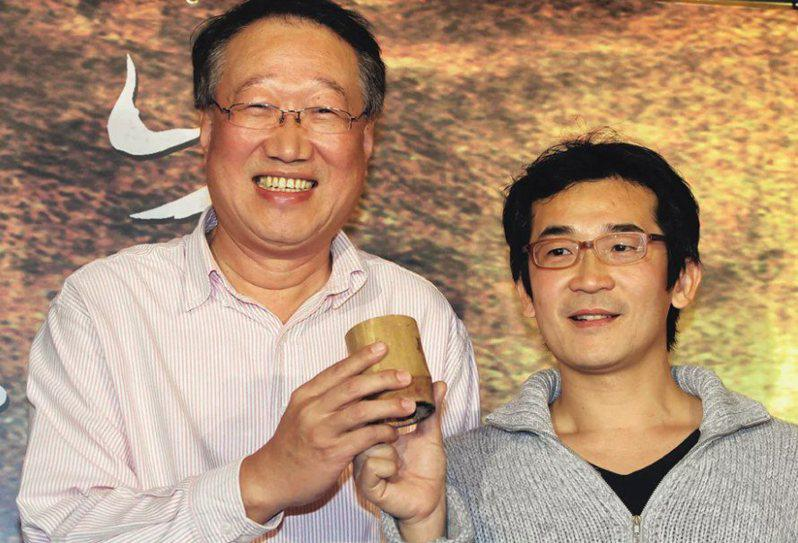
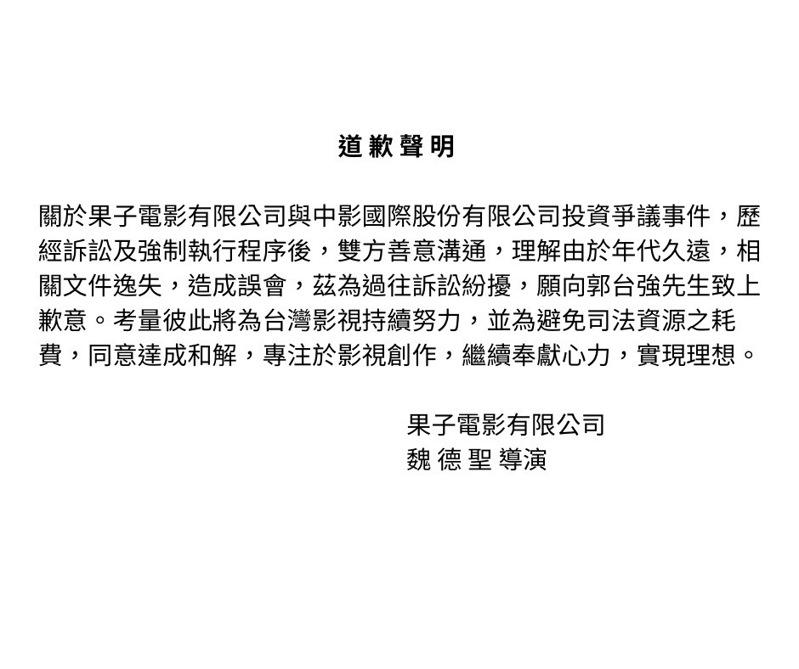

台湾导演魏德圣2011年拍摄电影「赛德克．巴莱」时，获中影董事长郭台强投资，但双方却衍生一笔4500万元(台币，约138万)债权纠纷，郭台强持本票向法院声请查封魏德圣的个人与公司财产，魏德圣认为自己遭设局欺骗，连赛德克巴莱的版权都不保，控告郭台强涉及诈欺、侵占、背信及伪造文书等罪，两人闹上法庭已有一年多，9日凌晨12点宣布和解，魏德圣发表道歉声明，并向郭台强公开道歉。
魏德圣通过创办的「果子电影 x 米仓影业」公司脸书官方粉丝专页贴出道歉声明，文中写到关于果子电影有限公司与中影国际股份有限公司投资争议事件，「历经诉讼及强制运行程序后，双方善意沟通，理解由于年代久远，相关文档逸失，造成误会，兹为过往诉讼纷扰，愿向郭台强先生致上歉意。」考量到彼此将为台湾影视持续努力，为避免司法资源之耗费，同意达成和解，专注于影视创作，继续奉献心力，实现理想。」
有传闻指出，先前已有身边友人盼望两边能和解，魏德圣基于对方是大财团，再加上仍有新片要准备而决定和解，据悉原本预计登报道歉，改由官方粉丝页道歉，粉丝页也暂时关闭回应，目前魏德圣对此尚无回应。
